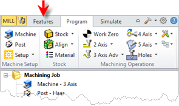
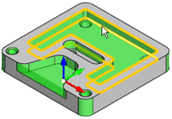
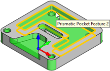

Here you can set preferences related to Features (for MILL module only). Note: These preferences are not available in XPR (Xpress) configuration.
 CAM Preferences > Features |
Show Features Tab Check this box to display the Features tab. If this is not checked, then you will not be able to perform Feature Recognition. Show Features Tab in Machining Objects Browser Check this box if you prefer to have the Features tab appear in the Machining Objects Browser (to the right of the Regions tab). If this box is not checked, the Features tab will appear in the Machining Browser (to the left of the Program tab) as shown below.  |
This section allows you to set the default Feature Color and default Selected Feature Color. Feature Color Here you can set the default Feature Color. When an operation is selected from the Machining Job tree of the Machining Browser, that is derived from a Machining Feature, the feature is highlighted using this color. Selected Feature Color Here you can set the default Selected Feature Color. When a Machining Feature is selected from the Features tab of the Machining Objects Browser, the feature is highlighted using this color. |
This refers to how transparent feature colors (see Colors above) on the screen when features are displayed. |
This section allows you to set selection preferences for detected Features. Turn on pre-selection highlight Check this box to highlight detected Features when the cursor moves over them in the graphics window.  Feature pre-selection highlight Turn on pre-selection tips Check this box to display Feature section tips when the cursor moves over a detected Feature in the graphics window.  Feature pre-selection tips |
This field displays the path the default Automatic Feature Machining (AFM) Knowledge Base. Select the ... button to select a different path. C:\ProgramData\MecSoft Corporation\RhinoCAM 2023\FeatureBasedMachiningKBs\DefaultAFM_INCH. vkb |